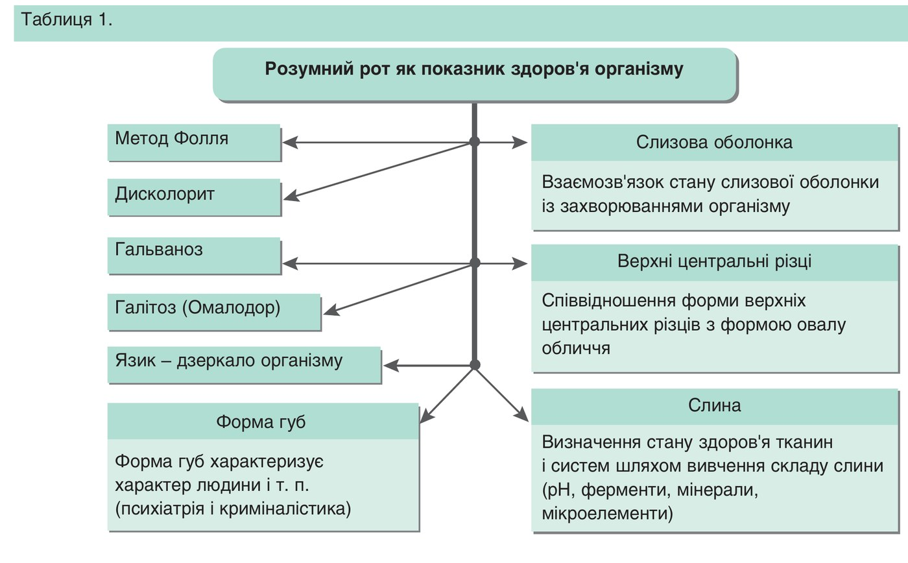
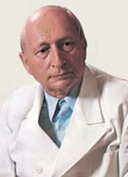
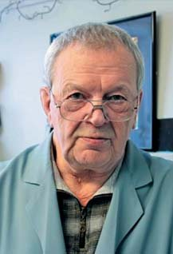
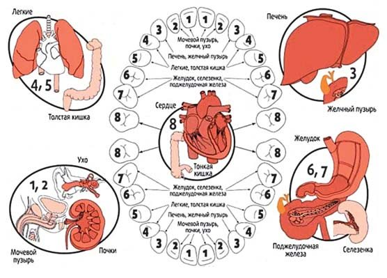

Точка зору · журнал «ДентАрт» 2019 №2
Розумний рот як показник здоров’я організму
SMART MOUTH AS AN INDICATOR OF HEALTH
Григорій ФлейшерСтан зубів і ротової порожнини людини є досить переконливим індикатором здоров’я внутрішніх органів і всього організму в цілому. Здоров’я ротової порожнини – невід’ємна частина здоров’я всього організму протягом усього життя людини. Незадовільне стоматологічне здоров’я, відсутність як належної уваги до стоматологічних захворювань, так і їх адекватного лікування погіршують якість життя. Профілактика розвитку, а також забезпечення повноцінного і своєчасного лікування стоматологічних захворювань проголошені ВООЗ необхідною умовою запобігання виникненню хронічних захворювань і збереження здоров’я всього організму. Захворювання ротової порожнини – це діагностичний маркер, який вказує на стан внутрішніх органів. Знання цього моменту дуже важливе для стоматологів, терапевтів та інших лікарів.
Проводячи Всесвітній день здоров’я ротової порожнини, професійні асоціації різних країн традиційно привертають увагу громадськості до питань, що стосуються здоров’я ротової порожнини, звертаючи особливу увагу на важливість гігієни і профілактики стоматологічних захворювань та необхідність регулярного відвідування лікаря-стоматолога.
У 2019 році захід відбувся під девізом: «Подбайте про здоров’я рота – довіртеся стоматологові!». Основна тема святкувань спрямована на визнання суспільством необхідності відвідування стоматолога кожні півроку для профілактичного огляду поряд з правильною гігієною ротової порожнини, здоровим харчуванням і здоровим способом життя.
Всесвітній день здоров’я ротової порожнини ставить своїм завданням поширити інформацію про вплив здоров’я ротової порожнини на загальне фізичне здоров’я і добре самопочуття кожної людини. Цей день покликаний на міжнародному рівні підвищити обізнаність не лише пересічних пацієнтів, а й громадських організацій, щоб згодом об’єднати зусилля в напрямку зниження тягаря стоматологічних захворювань.
В рамках цього свята активісти регіональних громадських об’єднань, лікарі-стоматологи медичних і стоматологічних організацій, представники стоматологічної індустрії, викладачі і студенти стоматологічних факультетів медичних вузів провели багато інформаційно-просвітницьких заходів, освітніх акцій, конкурсів та семінарів – тобто було розгорнуто справді масштабну кампанію з пропаганди здоров’я ротової порожнини, яка тривала протягом місяця (з 1 по 31 березня 2019 р.).
Принцип цілісності організму лежить в основі вдосконалення підходу до оцінки стоматологічного здоров’я. Комплексний аналіз поєднаної патології органів ротової порожнини і внутрішніх органів дозволяє отримати уявлення про сутність походження багатьох залежних від соматичного стану захворювань ротової порожнини (табл. 1).

Організм людини функціонує як єдина система, і негаразди з одним органом впливають на стан іншого. Це було відомо древнім китайцям, які вміли, наприклад, за станом зубів не тільки виявляти хвороби внутрішніх органів, а й «читати» характер людини і навіть пророкувати її долю. Існування взаємозв’язку між здоров’ям зубів і хворобами інших органів підтвердив і німецький вчений доктор Райнхольд Фолль (фото 1). І хоча ставлення до цього методу в медичних колах неоднозначне, методикою «діагностики за Фоллем» сьогодні користується багато лікарів. За цієї методики для встановлення діагнозу аналізується, крім усього іншого, і стан зубів пацієнта. Діагностика Р. Фолля заснована на вже відомому феномені, що опір або напруга в точках і меридіанах шкіри людини, які визначаються китайською медициною, вищі, ніж у навколишніх тканинах. Р. Фолль, використавши високочутливі вимірювальні прилади, виявив нові точки і меридіани з вищою напругою, особливо на шкірі кистей і стоп. Це дало йому можливість розробити методику діагностики захворювань організму за вже відомими і нововиявленими точками і меридіанами.

Нині багато фахівців у галузі стоматології, як практики, так науковці, висловлюють думку, що хвороби зубів можуть позначатися на функціонуванні багатьох органів людини. Які ж підстави для таких висновків і чи варто вважати їх незаперечно правильними?
Дослідження, спрямовані на вивчення взаємозв’язку внутрішніх органів із зубами, провадяться вже давно. Наприклад, учені з’ясували, що чим менше залишається зубів, тим гірша у людини пам’ять, а ось нервозність і дратівливість, навпаки, зростають. Часом звучать і зовсім уже гучні заяви, подібні до цієї: видалення зуба – це як видалення частини мозку. Аргументують це тим, що при видаленні зуба відбувається обрив відростка трійчастого нерва, що зв’язує верхню і нижню щелепу, а також лобову частину голови.
«Сьогоднішні лікарі взяли на озброєння найсучасніші методи діагностики. Але при цьому вони, як і раніше, з інтересом ставляться до способів, за допомогою яких визначали хворобу стародавні ескулапи. Якщо правильно розпізнати знаки, які подає наше тіло, лікар може багато чого довідатися про стан здоров’я пацієнта, і це наведе його на правильний слід хвороби. До своєрідних проекційних зон, на яких, мов на екрані, відображаються різні процеси, що відбуваються всередині організму, належать і наші зуби», – такої думки дотримується доктор медичних наук, професор ЦНДІ стоматології Геннадій Банченко (фото 2).

Таким чином, якщо у пацієнта при відвідуванні стоматолога виявляється патологія у певному зубі, то за таблицею можна сказати про наявність процесу у внутрішньому органі і системі, можливо, ще задовго до появи відповідних скарг. Лікування цього зуба і навіть видалення гранулеми, кістогранулеми не вирішать проблеми, оскільки найважливіше – профілактичні заходи: загальне очищення організму від шлаків і раціональне харчування для відновлення кислотно-лужної рівноваги в тканинах, а також у лімфі, крові, а отже, у тканинах ротової порожнини, що живлять зуби.
Зуби реагують на внутрішні негаразди в організмі, кожен хворий зуб безпосередньо пов’язаний з хворобою якогось із внутрішніх органів. Згідно із старокитайською методикою, кожен зуб пов’язаний з певним органом. Зв’язок прямий і зворотний. Тобто при впливі на зуб (удар, травма, видалення зуба) іде вплив і на орган (болі в органі). При впливі на орган (травма або захворювання) іде вплив і на зуб (болі у позірно здоровому зубі). На рисунку 1 «Зв’язок зубів і органів людини» подано, який зуб пов’язаний з яким органом.
Кожен зуб пов’язаний з нервовим закінченням і кровоносною судиною, що містяться в яснах. Захворювання зубів неодмінно позначаються на стані організму. Існує багато хвороб, в основі яких лежить вогнище інфекцій, розташоване в зубах або яснах. Наприклад, запалення тканини біля зубів у 90% випадків призводить до змін у серці, до астми, виразки шлунка і 12-палої кишки, гастриту, захворювань підшлункової залози.
Так, печінка проектується на рівні нижніх іклів, про стан підшлункової залози можна судити за малими корінними зубами, а про захворювання суглобів ніг – за передніми зубами верхньої і нижньої щелепи. Про те, що відбувається у шлунку або кишечнику, можна судити не тільки за зубами, але й за станом ясен. У тих, хто страждає на виразку шлунка або дванадцятипалої кишки, у більшості випадків розвивається пародонтоз. Крім того, при виразці шлунка на зубах обов’язково з’являється рясне відкладення каменю. Залежно від того, який зуб страждає від карієсу, можна судити, якому внутрішньому органові потрібна допомога. А якщо один і той же зуб болить не вперше – це свідчить про те, що хвороба, можливо, зайшла досить далеко, заходів слід уживати терміново, і крім стоматолога, піти ще й до іншого фахівця.
Якщо процес не зупинити, то хворий орган знову буде посилати в зуб свої сигнали про допомогу. У свою чергу карієс може стати причиною постійної мігрені. Причому сам зуб, буває, і не болить. Головний біль у таких випадках приписується чому завгодно – від грипу до магнітної бурі. Особливо часто таке буває, коли запалюються зуби нижньої щелепи і якось невиразно болить уся голова. При карієсі на верхній щелепі біль уже конкретніший: запалення іклів віддає у скроню, а жувальних зубів – у тім’яно-потиличну зону. Стоматологи зустрічаються і з таким «зубним» болем, за якого карієсу немає.
Наше тіло – це сукупність взаємопов’язаних органів. Коли відмовляє та чи інша частина організму, інша його частина може реагувати на такі зміни досить болісно. Зв’язок зубів із внутрішніми органами – один з прикладів такого взаємозв’язку.
Карієс, пульпіт і навіть незначне пошкодження зуба можуть служити сигналом про «непорядок» у відповідній йому групі органів. Іноді нас турбують дискомфортні відчуття і в зовні абсолютно здорових зубах. Часом болять і ті місця, де зуби давно вже видалені. Це так званий фантомний біль, він виникає тому, що сигнали з органів, які страждають, рефлекторно надходять у зону відповідних їм зубів. Нічого не підозрюючи про ці взаємозв’язки, людина глушить гострий біль таблетками, і він відступає. А це ж була «шифровка», яку передав хворий орган!

Результати численних досліджень підтверджують безпосередню участь системного і локального запалення в ініціації і прогресуванні атеросклерозу та його ускладнень. У зв’язку з цим інфекційно зумовлені хвороби ротової порожнини розглядаються як фактор ризику розвитку серцево-судинних захворювань. Припускають, що хронічний запальний процес у тканинах пародонту знижує антиатерогенний потенціал ліпопротеїдів високої щільності. Доведено, що запальні захворювання пародонту є незалежним чинником ризику розвитку ішемічної хвороби серця.
Лише у абсолютно здорової людини – гарна усмішка, що вирізняється природним здоровим кольором не тільки зубів, але й слизової оболонки. Природний колір емалі у кожної людини різний. Але іноді забарвлення зубів може багато що розповісти про стан здоров’я людини.
- Емаль жовтого кольору – ознака негараздів у роботі жовчовивідних шляхів. Нерідко жовтий колір зубів буває у затятих курців. Коли слабшає імунітет, зубна емаль набуває коричневого відтінку.
- Колір перламутру спостерігається у людей зі зниженим вмістом гемоглобіну в крові.
- Про брак мінералів у зубних тканинах свідчить емаль кольору молока. Це також ознака підвищення активності щитовидної залози. Дуже часто нестача мінеральних речовин, особливо в ранньому дитячому віці, призводить до появи сірих плям або жовтих смужок на зубах. Ця ознака може свідчити і про надмірне вживання антибіотиків. У деяких випадках уживання, наприклад, тетрацикліну в період виношування дитини може згодом позначитися на кольорі її зубної емалі.
- Якщо зуби змінили колір на жовтий, то проблема може бути зі здоров’ям печінки або жовчного міхура. Якщо зуби набули коричневого відтінку, можливо, негаразди з імунною системою. Якщо жувальна поверхня корінних зубів забарвилася у темно-жовтий колір з червонуватим відтінком, то є сенс перевірити роботу надниркових залоз.
Вважається, що здоров’я тих чи інших зубів відображає здоров’я конкретних внутрішніх органів. І якщо з будь-яким зубом виникають проблеми – він кришиться, його руйнує карієс, то цілком імовірно, що хвороба «гніздиться» не тільки в зубах, але й усередині організму. Згідно з діагностикою за Фоллем, зуби «пов’язані» з внутрішніми органами за схемою, поданою на рис. 1 і в таблицях 1-5.
| Зуби | ||||||||
|---|---|---|---|---|---|---|---|---|
| 18 | 17 | 16 | 15 | 14 | 13 | 12 | 11 | |
| Органи чуттів | Внутрішнє вухо | Гайморова пазуха | Клітини ґратчастого лабіринту | Око | Лобова пазуха | |||
| Ендокринні залози | Передня частина гіпофізу | Паращитовидна залоза | Щитовидна залоза | Тимус | Задня частина гіпофізу | Проміжна частина гіпофізу | Епіфіз | |
| Органи | Серце, тонкий кишківник, дванадцятипала кишка | Стравохід, шлунок; права частина підшлункової залози, права молочна залоза | Легені, бронхи, трахея, сліпа кишка з апендиксом, висхідна ободова кишка | Права частина печінки, жовчний протік, жовчний міхур | Нирки, сечовід, сечовий міхур, сечовипускний канал, генітальні органи, пряма кишка, анальний канал, задній прохід | |||
| Меридіани | тонкого кишківника і серця | шлунка і селезінки – підшлункової залози | товстого кишківника і легенів | жовчного міхура і печінки | сечового міхура і нирок | |||
| Зуби | ||||||||
|---|---|---|---|---|---|---|---|---|
| 21 | 22 | 23 | 24 | 25 | 26 | 27 | 28 | |
| Органи чуттів | Лобова пазуха | Око | Клітини ґратчастого лабіринту | Гайморова пазуха | Внутрішнє вухо | |||
| Ендокринні залози | Епіфіз | Проміжна частина гіпофізу | Задня частина гіпофізу | Тимус | Щитовидна залоза | Паращитовидна залоза | Передня частина гіпофізу | |
| Органи | Нирки, сечовід, сечовий міхур, сечовипускний канал, генітальні органи, пряма кишка, анальний канал, задній прохід | Ліва частина печінки | Легені, бронхи, трахея, ліва частина поперечної ободової кишки, низхідна ободова кишка, сигмовидна ободова кишка | Стравохід, шлунок, перехід стравоходу в шлунок (дно шлунка); ліва частина селезінки, ліва молочна залоза | Серце, тонкий кишківник, дванадцятипала кишка | |||
| Меридіани | сечового міхура і нирок | жовчного міхура і печінки | товстого кишківника і легенів | шлунка і селезінки – підшлункової залози | тонкого кишківника і серця | |||
| Зуби | ||||||||
|---|---|---|---|---|---|---|---|---|
| 31 | 32 | 33 | 34 | 35 | 36 | 37 | 38 | |
| Органи чуттів | Лобова пазуха | Око | Гайморова пазуха | Клітини ґратчастого лабіринту | Зовнішній слуховий прохід, вушна раковина | |||
| Ендокринні залози | Наднирники | Проміжна частина гіпофізу | Статеві залози | — | — | — | — | |
| Органи | Нирки, сечовід, сечовий міхур, сечовипускний канал, генітальні органи, пряма кишка, анальний канал, задній прохід | Ліва частина печінки | Стравохід, шлунок, перехід стравоходу в шлунок (дно шлунка); ліва частина селезінки, ліва молочна залоза | Легені, бронхи, трахея, ліва частина поперечної ободової кишки, низхідна ободова кишка, сигмовидна ободова кишка | Серце, тонкий кишківник, дванадцятипала кишка | |||
| Меридіани | сечового міхура і нирок | жовчного міхура і печінки | шлунка і селезінки – підшлункової залози | товстого кишківника і легенів | тонкого кишківника і серця | |||
| Зуби | ||||||||
|---|---|---|---|---|---|---|---|---|
| 48 | 47 | 46 | 45 | 44 | 43 | 42 | 41 | |
| Органи чуттів | Зовнішній слуховий прохід, вушна раковина | Клітини ґратчастого лабіринту | Гайморова пазуха | Око | Лобова пазуха | |||
| Ендокринні залози | — | — | — | — | Статеві залози | Проміжна частина гіпофізу | Наднирники | |
| Органи | Серце, тонкий кишківник, клубова кишка | Легені, бронхи, трахея, сліпа кишка з апендиксом, висхідна ободова кишка | Стравохід, шлунок; права частина підшлункової залози, права молочна залоза | Права частина печінки, жовчний протік, жовчний міхур | Нирки, сечовід, сечовий міхур, сечовипускний канал, генітальні органи, пряма кишка, анальний канал, задній прохід | |||
| Меридіани | тонкого кишківника і серця | товстого кишківника і легенів | шлунка і селезінки – підшлункової залози | жовчного міхура і печінки | сечового міхура і нирок | |||
Складний комплекс патофізіологічних реакцій у тканинах ясен, опорних структурах зуба й альвеолярній кістці є основою розвитку запально-деструктивних змін, які становлять патоморфологічний субстрат захворювань пародонту. Характер локальних патологічних механізмів розвитку уражень пародонту – результат взаємодії різноманітних етіопатогенетичних детермінантів. Немає сумнівів, що бактеріальна колонізація запускає і підтримує процеси запалення пародонту. І ефект цього впливу, очевидно, залежить від реактивних процесів в організмі, які можуть як обмежувати деструктивні процеси у тканинах пародонту, так і сприяти їм. У тих і в інших випадках ідеться про реакції захисних сил організму, пов’язані з системою імуногенезу і запалення. Виникнення, розвиток, клінічний перебіг, ефективність лікування і результат запальних захворювань пародонту багато в чому визначаються станом імунної системи організму, оскільки їх безпосередньою причиною є колонізація мікроорганізмів під яснами, зумовлена зниженням резистентності тканин пародонту, що, у свою чергу, є наслідком недостатнього імунного та неспецифічного захисту ротової порожнини, а можливо, і підвищення на цьому тлі вірулентності мікрофлори.
Понад 30 системних захворювань організму проходять з ураженням пародонту із закономірністю, що наближається до 100%. Одним з найпоширеніших і найстійкіших поєднань є патологія пародонту на тлі діабету. Вплив цукрового діабету на характер ураження пародонту належить до однієї з найінтенсивніше розв’язуваних проблем сучасної пародонтології, однак прямі метаболічні зв’язки пародонтиту та цукрового діабету вивчені недостатньо. Цукровий діабет значно ускладнює перебіг пародонтиту, викликаючи порушення мікроциркуляції у пародонтальному комплексі, недостатність фагоцитарної функції та імунного захисту органів і тканин ротової порожнини, зниження колонієрезистентності до патогенної мікрофлори ротової порожнини, надмірне накопичення токсичних продуктів, що утворюються в результаті порушення всіх видів метаболізму. О. Ю. Спасова (2008) довела, що у дорослих при тривалому, тяжкому і декомпенсованому перебігу цукрового діабету розвиваються більш виражені запальні процеси в тканинах пародонту. В. Ю. Хитров (2001) у своєму дослідженні дійшов висновку про те, що показники гігієни ротової порожнини у дітей, хворих на цукровий діабет, не залежали від ступеня тяжкості основного захворювання. Однак вони корелювали з клінічними показниками стану тканин пародонту.
Завдяки сучасним технологіям нині можна з мінімальним оперативним втручанням поліпшувати стан здоров’я і зовнішній вигляд пацієнтів, виконувати великі реконструктивні об’єми протезування зубів без зайвого втручання у тверді і м’які тканини ротової порожнини.
Лікування стоматологічної патології має стати невід’ємним компонентом у комплексній терапії всіх соматичних хворих. Стоматологічне обстеження цього контингенту слід робити в перші дні після звертання, а потім протягом усього періоду відновного лікування основного захворювання активно усувати патологічні прояви в ротовій порожнині, домагаючись повної її санації. Не слід відкладати лікування стоматологічних захворювань, особливо пародонтиту, на віддаленіші періоди. Якнайшвидше усунення з ротової порожнини хронічних вогнищ інфекції, які відіграють важливу роль у патогенезі соматичних захворювань, – обов’язкова умова профілактики рецидивів захворювань пародонту. Беручи до уваги той факт, що основними джерелами інфекції у ротовій порожнині є, як правило, хронічні гінгівіти і пародонтити, а їх лікування трудомістке і вельми специфічне, доцільно залучати до складу стоматологічної служби лікувально-профілактичних установ лікарів-пародонтологів, котрі мають необхідну професійну кваліфікацію і володіють відповідними методами і технологіями роботи.
Висновки
Таким чином, якщо у пацієнта при відвідуванні стоматолога виявляється процес у певному зубі, то за таблицями «Взаємозв’язок зубів з внутрішніми органами» можна сказати про наявність процесу у внутрішньому органі і системі, можливо, ще задовго до появи відповідних скарг. Лікування цього зуба і навіть видалення гранулеми, кістогранулеми не вирішать проблеми, оскільки найважливіше – профілактичні заходи: загальне очищення організму від шлаків і раціональне харчування для відновлення кислотно-лужної рівноваги в тканинах, а також у лімфі, крові, а отже, у тканинах ротової порожнини, що живлять зуби.
Виходячи з викладеного вище, можна зробити висновок, що захворювання ротової порожнини – це діагностичний маркер, який вказує на стан внутрішніх органів. Знання цього моменту дуже важливе для стоматологів, терапевтів та інших лікарів.
Список літератури в редакції